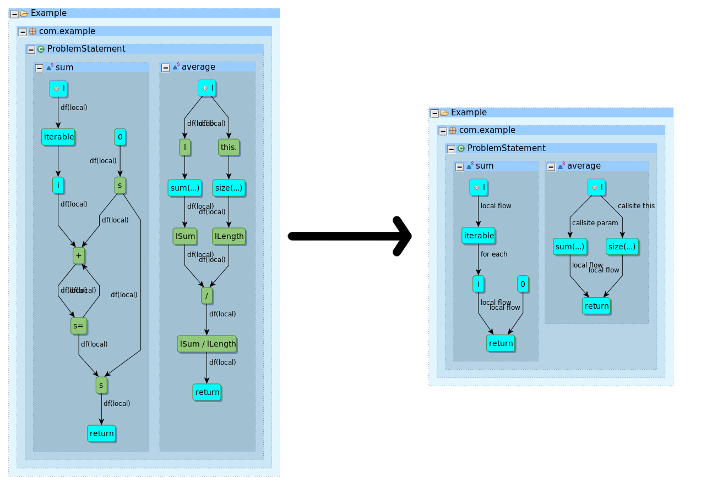

Overview
FlowMiner is a program analysis plugin for Eclipse that produces fine-grained, compact data flow summaries of a Java library. Unlike other library summary techniques which have coarse and lossy outputs, FlowMiner produces summaries that are expressive-enough to be used with context, object, field, type, and flow-sensitivity. We achieve this using a graph-based software analysis paradigm.
Features
- Summarizes arbitrary Java library bytecode (JARs)!
- Inputs: Java library JAR(s) to summarize, dependency JAR(s) (if any)
- Outputs: Summary data flow graph as compressed, portable XML
- Fine-grained summaries for existing program analysis tools to improve results
- IO plugin available (so existing tools don't have to implement XML parsers)
- Automatic summary import for tools based on Atlas analysis platform
- Extremely easy to use (Eclipse plugin with user interface)
Getting Started
Ready to get started?